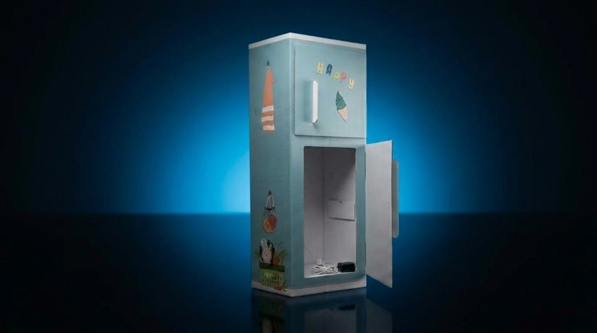

Un dispositivo intelligente in grado di riconoscere gli alimenti all'interno e suggerire ricette creative per azzerare gli sprechi alimentari in cucina.

Grazie all'intelligenza artificiale e a una rete di sensori avanzati, FoodGuard monitora costantemente lo stato del frigorifero.
Sensori di visione artificiale identificano i prodotti inseriti o rimossi dal frigorifero in tempo reale.
Analizza gli ingredienti vicini alla scadenza e suggerisce ricette gustose per utilizzarli subito.
Invia notifiche smart sullo smartphone per avvisarti prima che i prodotti freschi vadano sprecati.
Realizzato dagli studenti all'interno del laboratorio digitale e tecnologico, FoodGuard unisce IoT, programmazione Python e apprendimento automatico per promuovere la sostenibilità ambientale e la lotta allo spreco alimentare quotidiano.